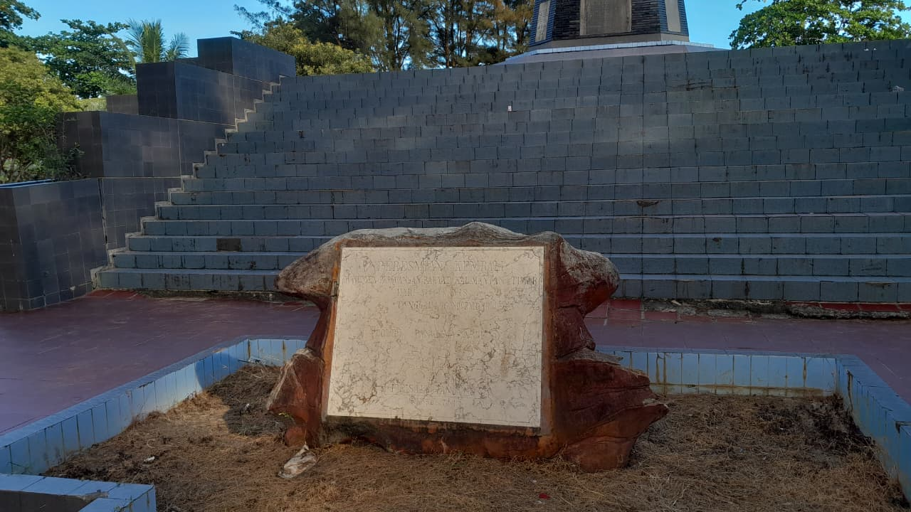
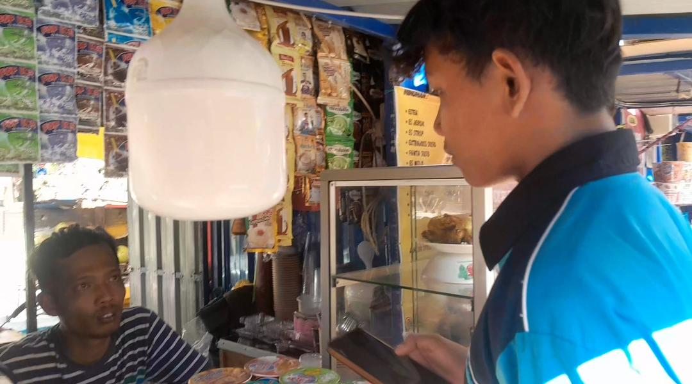
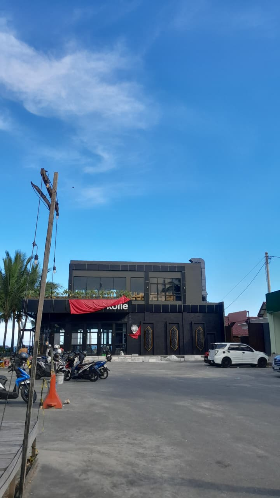

Evaluasi Dampak Lingkungan
Memetakan pengaruh positif dan negatif terhadap kawasan sekitar.
Dampak Positif
- Stimulasi ekonomi lokal bagi UMKM Balikpapan.
- Revitalisasi situs sejarah & edukasi publik.
- Penguatan Ruang Terbuka Hijau (RTH) kota.
Dampak Negatif
- Peningkatan volume limbah domestik.
- Penurunan kualitas air laut di bibir pantai.
- Kendala kemacetan di akses parkir.
Matriks Masalah & Solusi
| Aspek Terpengaruh | Identifikasi Masalah | Solusi & Tindakan |
|---|---|---|
| Kawasan Sejarah | Kerusakan fisik struktur prasasti. | Restorasi rutin & pagar pembatas inti. |
| Kebersihan | Sampah plastik di area taman. | Tempat sampah pilah & patroli harian. |
| Limbah Cair | Potensi limbah dari unit kafe. | Penerapan sistem IPAL komunal/mandiri. |
Dokumentasi Lapangan

Struktur Ikonik Monumen
Analisis Ruang Terbuka Hijau

Bukti Dokumentasinya

Tempat cafe
Tindakan Strategis
Langkah nyata untuk menjaga kelestarian Pantai Monumen sebagai aset Kota Balikpapan.
Jangka Pendek
Pembersihan garis pantai intensif & perbaikan fasilitas publik segera.
Jangka Panjang
Sistem IPAL terpadu & perluasan zona hijau sebagai benteng abrasi.